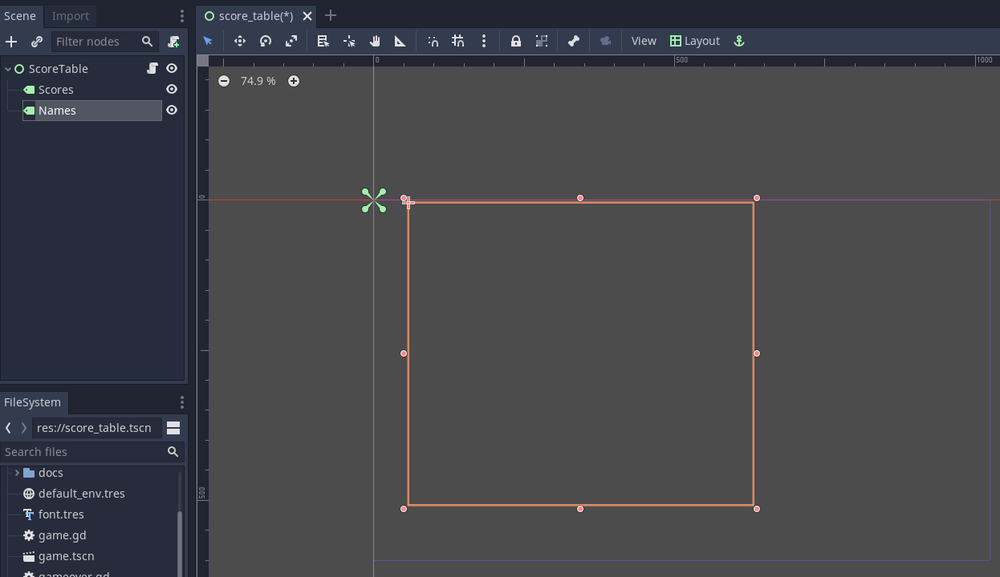
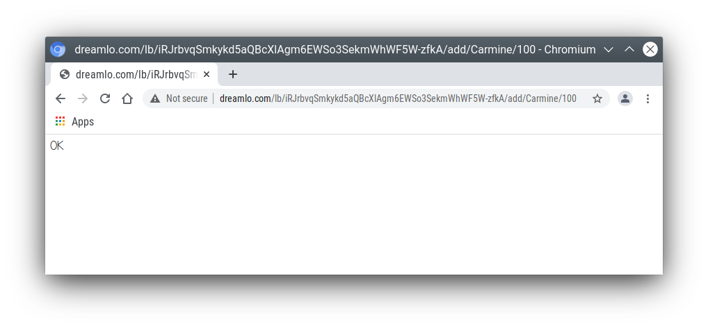

Godot High Score Tables
1 High Score Tables
This tutorial will show you how to add a locally saved high score table to your game. (The next tutorial will show you how to add an online leaderboard to your game.)
If you already have a game you should be able to apply the tutorial to it. Alternatively, I have provided a very simple game which you can download, import into Godot and use.
Links:
1.1 The simple game
Before we start adding anything we will look at what the simple game already has and how it works. (This section is for information; you don’t have to do anything until the next section.)
Our game only has 2 scenes:
title_screen.tscn
game.tscn


The code for this is very simple:
func _on_QuitButton_pressed():
get_tree().quit()
func _on_PlayButton_pressed():
get_tree().change_scene("res://game.tscn")These functions are connected to the buttons via signals. Note there is no function for the high score button yet.
The game scene has only 4 nodes:
- A label to display the time
- A label to display the score
- A timer
- An icon (sprite)

The code simply counts down the timer every second, and increases the score every time a key is pressed:
var time = 10
var score = 0
func _on_Timer_timeout():
time -= 1
$TimeLabel.text = "TIME: "+str(time)
if time <=0:
get_tree().change_scene("res://title_screen.tscn")
func _unhandled_input(event):
if event is InputEventKey and not event.echo:
score += 1
$ScoreLabel.text = "SCORE: "+str(score)
$icon.position.y = score * 51.2 Game Over Screen
We need somewhere for the player to enter his name, so let’s make a ‘Game Over’ screen that will be displayed when the game ends.
Create a new scene.

Select User Interface for the root node.

Right click the root node Control and rename it to
gameover.Press ctrl+S keys and save the scene as
gameover.tscn.Add a Label child node to the root node.
- In the Inspector, click Custom Fonts and then drag the font.tres file from the FileSystem (bottom left of screen) into the [empty] font field.
- In the Inspector, enter into the Text field
GAMEOVER
Your score is- Add a second Label child node to the root node.
- Rename it to
score. - In the Inspector, enter into the Text field: 0.
- In the Inspector, click Custom Fonts and then drag the font.tres file from the FileSystem (bottom left of screen) into the [empty] font field.
- Rename it to
- Add a LineEdit child node to the root node.
- In the Inspector, click Custom Fonts and then drag the font.tres file from the FileSystem (bottom left of screen) into the [empty] font field.
- Drag things around until it looks something like this:

- Edit the script file game.gd.
- Change
"res://title_screen.tscn"to"res://gameover.tscn"so that the game goes to the gameover screen at the end.
- Change
1.3 Global variables
We have a problem: we want to display the score on the Game Over screen, but the score is only stored in the game.gd script, not the gameover.gd one.
In Python (and Godot) we saw global variables that can be used from any function in one script. In Python if we want to use a variable from another script we have to import it.
In Godot we can do something similar but it’s easier to create variables that can be used by any script in any scene by creating a singleton object. Let’s do this.
Create a new script. It won’t be attached to a node, so we have to go to the script editor and click File menu, then New Script. Enter
globals.gdas the name of the script and press create.Add a score variable to the bottom of the script:
var score=0Save the script. (ctrl-S)
To make this accessible from anywhere:
- Click Project menu, then Project Settings, then AutoLoad.
- Click the small folder icon and select the globals.gd script. Press open.
- Press Add. Then Close.
Now go back the game.gd script and delete the line containing the score variable (line 5). Then change all the other references from
scoretoGlobals.score.The end result should look like this:
extends Node2D
var time = 10
func _on_Timer_timeout():
time -= 1
$TimeLabel.text = "TIME: "+str(time)
if time <=0:
get_tree().change_scene("res://gameover.tscn")
func _unhandled_input(event):
if event is InputEventKey and not event.echo:
Globals.score += 1
$ScoreLabel.text = "SCORE: "+str(Globals.score)
$icon.position.y = Globals.score * 5You don’t need to type all that, you only need to make 4 edits. But that’s the complete file you should have after your changes.
- Let’s see if we can access the score from the gameover screen now. Go to the gameover.tscn scene. Right click on the root node and attach script. Press create. Edit ready function (delete the
pass) so that it looks like this:
func _ready():
$score.text = str(Globals.score)- Now run the game and test that your score is indeed displayed.
Why did we have to use the
str()function here? What happens if you do$score.text = Globals.scoreinstead?
1.4 Storing the names
Before we can display the table we need somewhere to store the scores and the names, so let’s add two lists to the end of the globals.gd script:
var scores = []
var names = []Go back to gameover.tscn scene and click on the LineEdit node. This is where the name is entered.
Click on Node to the right of the Inspector to view the Signals. Double click on text_entered. Press connect.
A function will be created for you that is called when the player enters his name and presses return. Edit the function to look like this:
func _on_LineEdit_text_entered(new_text):
Globals.scores.append(Globals.score)
Globals.names.append(new_text)
get_tree().change_scene("res://score_table.tscn")1.5 Displaying the high score table
Create a new scene.
Select User Interface for the root node.
Rename the root node to
ScoreTable.Save the scene as
score_table.tscn.Add a Label child node to the root node.
- Rename it to
Names - In the Inspector, click Custom Fonts and then drag the font.tres file from the FileSystem (bottom left of screen) into the [empty] font field.
- Rename it to
Add a Label child node to the root node.
- Rename it to
Scores - In the Inspector, click Custom Fonts and then drag the font.tres file from the FileSystem (bottom left of screen) into the [empty] font field.
- Rename it to
Position the two labels side by side like this:


Right click on the root node and Attach script. Press create. Edit the ready function so that it looks like this:
func _ready():
for name in Globals.names:
$Names.text += name + "\n"
for score in Globals.scores:
$Scores.text += str(score)+"\n"- Run the game and test.
You should be able to enter your score and see the score table. However, you will then be stuck because there is no menu navigation.
1.6 Menu navigation
Open the score_table.tcns scene.
Add a Button child node to the root node.
Rename it to
BackButtonIn the Inspector set the Text toBack.In the Inspector, click Custom Fonts and then drag the font.tres file from the FileSystem (bottom left of screen) into the [empty] font field.

Click on Node to the right of the Inspector to view the Signals. Double click on pressed. Press connect.
Edit the function so that it looks like this:
func _on_BackButton_pressed():
get_tree().change_scene("res://title_screen.tscn")Now go to the title_screen.tscn scene.
Click on the HighScoresButton node. Click on Node to the right of the Inspector to view the Signals. Double click on pressed. Press connect.
Edit the function so that it looks like this:
func _on_HighScoresButton_pressed():
get_tree().change_scene("res://score_table.tscn")- Well done! You now have a (sort of) working high score table! Try it out.
1.7 Challenge: fix the bug
We have accidentally introduced a bug into the game that happens when you play two or more games in a row without quitting. What is the bug?
How can you fix it?
1.8 Saving files
There a couple of big problems with this score table. The first one is that it loses the scores every time you quit game.
To fix this, we can store the scores in a file on the computer’s disk. We will create separate functions for loading and saving the scores. Edit globals.gd and add this code to the bottom:
func _init():
load_scores()
func save_scores():
var file = File.new()
file.open("user://game.dat", File.WRITE)
file.store_var(names)
file.store_var(scores)
file.close()
func load_scores():
var file = File.new()
var err = file.open("user://game.dat", File.READ)
if err != OK:
print("error loading scores")
else:
names = file.get_var()
scores = file.get_var()
file.close()The first time we run the game there will be no score file, so we will we print an error, but this is OK, because it will be created when we save the scores. To do this, edit gameover.gd, and insert the one new line highlighted below:
func _on_LineEdit_text_entered(new_text):
Globals.scores.append(Globals.score)
Globals.names.append(new_text)
Globals.save_scores()
get_tree().change_scene("res://score_table.tscn")Run the game and check your scores load and save.
1.9 Challenge: Default scores
The first time you play the game, the score table is empty. Could you add some default scores in the code to fill it?
1.10 Advanced Challenge (optional!): Improve the organisation of the code.
Change the above function to be:
func _on_LineEdit_text_entered(new_text):
Globals.add_score(new_text)
get_tree().change_scene("res://score_table.tscn")Then write the add_score function in globals.gd to make this work.
(If you attempt this challenge but do not complete it, remember to undo the changes you made to the on_LineEdit_text_entered function.)
1.11 Sorting the scores
Currently, the scores are not displayed in the correct order. We need to sort them.
Godot has a built-in sort function, so we could call scores.sort(), but this would only sort the scores and not the names. The way a professional coder would deal with this would probably be to store the name and score in an object and write a comparator function. However, it’s more educational (and simpler) for us to just write our own sort function. (Not to mention that Godot’s support for object-oriented programming is frustratingly rudimentary!)
This is a famous algorithm called Bubble Sort.
Add this to the bottom of globals.gd:
func bubble_sort():
for passnum in range(len(scores)-1,0,-1):
for i in range(passnum):
if scores[i]<scores[i+1]:
var temp = scores[i]
scores[i] = scores[i+1]
scores[i+1] = temp
temp = names[i]
names[i] = names[i+1]
names[i+1] = tempEdit the save_scores function so that it sorts every time it saves (new line highlighted)
func save_scores():
bubble_sort()
var file = File.new()
file.open("user://game.dat", File.WRITE)
file.store_var(names)
file.store_var(scores)
file.close()1.12 Challenge: Sorting
This bubble sort is not optimized. Make it return as soon as it completes a pass with no swaps.
Implement some better sorting algorithms, such as Merge Sort and Insertion Sort
1.13 More things to try
Add an ‘OK’ button on the gameover screen.
Display ranking number 1, 2, 3, etc next to the names.
What do you do when there are too many scores to fit on the screen? Delete the lowest ones? Or provide buttons to scroll up and down?
2 Online leaderboards
Saving to a local file is very useful, but if you want to compare your scores with your friends? You can’t read files saved to your friends’ computers, so instead you need to store all the scores on a computer on the Internet. This is called a server. Then as well as saving your score locally, you also send it to the server, like this:

The server saves your score along with all the scores of everybody else. Then when you want to display the scores, you send a request to the server to retrieve them:

Usually I would not suggest relying on third party servers for your game.
If you use a third party leaderboard service, what will the effect on your game be if it is not running? Do you think it will still be running five years from now?
However the dreamlo server is very simple, so if it does stop running it will not be difficult for us to create our own replacement. (That would would be the topic for another tutorial. For now we will use dreamlo).
2.1 Dreamlo sign-up
In your web browser, go to the website dreamlo.com.
Click Get Yours Now button.

In Godot, open globals.gd. Add these two variables, but rather than using my values, copy and paste the codes given to you on the left side of the web page.
var public_code = "60d206118f40bb114c4ca743"
var private_code = "iRJrbvqSmkykd5aQBcXlAgm6EWSo3SekmWhWF5W-zfkA"2.2 Submitting scores manually
Copy this URL into a new web browser window and press enter, but replace the code with your private code. (You can see this example on your private dreamlo page with the correct code already filled in)
http://dreamlo.com/lb/Sv3NeBzS0016IwMfZjGudTESQhkHwEpQ/add/Carmine/100
You should get a response that says OK or similar. You have submitted the score of 100 for player Carmine. Go ahead and submit a few more scores for other players.
To test if it worked, copy this URL and press enter but replace the code with your private code. (You can see this example on the dreamlo page with the correct code already filled in.)
http://dreamlo.com/lb/60d341098f40bb114c4e34b2/jsonYou will get a response that looks something like this:

Here it is with nicer indentation:
{"dreamlo":
{"leaderboard":
{"entry":
[
{"name":"Carmine","score":"100","seconds":"0"},
{"name":"Bob","score":"10","seconds":"0"}
]
}
}
}This is just plain text, but it is formatted in a format called JSON which makes it easy for us to write a program that processes. The names of the objects are important and we will need them later. Also note that curly brackets mean objects and square brackets mean lists/arrays.
2.3 Submitting scores programmatically
Open the gameover.tscn scene. Right click on the root node and add a child node. Choose HTTPRequest as the kind of node.
Open gameover.gd script and change the on_LineEdit_text_entered function so it looks like this (3 new lines):
func _on_LineEdit_text_entered(new_text):
Globals.scores.append(Globals.score)
Globals.names.append(new_text)
Globals.save_scores()
var url = "http://dreamlo.com/lb/"+Globals.private_code+"/add/"
url += new_text.percent_encode()+"/"+str(Globals.score)
$HTTPRequest.request(url)
get_tree().change_scene("res://score_table.tscn")If you run this, play the game and submit a score, it will appear to work. However networking coding is tricksy.
In your web browser, open the URL that you used previously to get the high s core table in JSON format. (For me this is http://dreamlo.com/lb/60d206118b114c4ca743/json but your public code will be different.)
You will probably find the score was not added. Why not? Because we changed the scene without waiting for the network request to finish. How long do we have to wait? It depends on the network speed. So we will next use a callback function that is called for us by Godot when the request is completed.
DELETE this line from the on_LineEdit_text_entered function.
get_tree().change_scene("res://score_table.tscn")Click on the HTTPRequest node. Click Node next to Inspector on the right to view the Signals. Double click the request_complated signal. Press connect.
Edit the function it generates to look like this:
func _on_HTTPRequest_request_completed(result, response_code, headers, body):
get_tree().change_scene("res://score_table.tscn")- Play the game, submit a score, and check it is added to dreamlo’s JSON data in the web browser.
2.4 Downloading the scores programmatically
Create a new scene.
Select User Interface for the root node.
Rename the root node to
OnlineScoreTable.Save the scene as
online_score_table.tscn.Add a Label child node to the root node.
- Rename it to
Names - In the Inspector, click Custom Fonts and then drag the
font.tresfile from the FileSystem (bottom left of screen) into the[empty]font field.
- Rename it to
Add a Label child node to the root node.
- Rename it to
Scores - In the Inspector, click Custom Fonts and then drag the font.tres file from the FileSystem (bottom left of screen) into the [empty] font field.
- Rename it to
Position the two labels side by side like this:
Right click on the root node and add a child node. Choose HTTPRequest as the kind of node.
Right click on the root node and Attach script. Press create. Edit the ready function so it looks like this:
func _ready():
$HTTPRequest.request("http://dreamlo.com/lb/"+Globals.public_code+"/json")Click on the HTTPRequest node. Click Node next to Inspector on the right to view the Signals. Double click the request_complated signal. Press connect.
Edit the function it generates to look like this:
func _on_HTTPRequest_request_completed(result, response_code, headers, body):
var json = JSON.parse(body.get_string_from_utf8())
var scores = json.result["dreamlo"]["leaderboard"]["entry"]
for i in scores:
$Names.text += i["name"] + '\n'
$Scores.text += i["score"] + '\n'Note how we needed the field names from the JSON output in order to tell Godot how to pull out the data from the text and put it in a list for us.
Go to the title_screen.tscn scene.
Right click on the VBoxContainer node and add a Button child node.
- Rename it to
OnlineHighScoreButton. - In the Inspector, enter into the Text field: ONLINE SCORES.
- In the Inspector, click Custom Fonts and then drag the
font.tresfile from the FileSystem (bottom left of screen) into the[empty]font field.
- Rename it to
Click on Node to the right of the Inspector to view the Signals. Double click on pressed. Press connect.
Edit the function that is created to look like this:
func _on_OnlineHighScoresButton_pressed():
get_tree().change_scene("res://online_score_table.tscn")- Run the game and test.
2.5 Error handling
When you run this it may work, but it may also crash.
Why? Because there are several possible responses the server could send you, and you don’t know which you are going to get.
There could be an error on the server or network that prevents getting any response at all.
You could get a response that does not contain data in the JSON format you were expecting.
You could get a response that contains no scores, because no-one has played the game yet.
You could get a response that is just a single score, because only one person has played the game.
You could get a response that is a list of scores.
Ideally we would write code to handle all of these possibilities, so that our game doesn’t crash unexpectedly.
For now, we are just going to do three basic error checks and return if there is an error. Note that we consider there being one single score to be an error, so you must submit two or more scores before this will display anything on the screen.
Edit the function so that it looks like this:
func _on_HTTPRequest_request_completed(result, response_code, headers, body):
if result != HTTPRequest.RESULT_SUCCESS:
return
var json = JSON.parse(body.get_string_from_utf8())
if json.error != OK:
return
var scores = json.result["dreamlo"]["leaderboard"]["entry"]
if not scores is Array:
return
for i in scores:
$Names.text += i["name"] + '\n'
$Scores.text += i["score"] + '\n'2.6 Challenges
Show the user what is going on. Display Downloading Scores when the scene loads, and then display Scores Downloaded when they have downloaded successfully. If one of the errors happens, display what the error is.
Handle the case when the table contains only one score. Hint:
if scores is Dictionary:
$Names.text == scores["name"]Add additional error checks. For example, what would happen if the JSON did not contain an entry for leaderboard?
Dreamlo also allows a time to be submitted along with the score. This is useful for games with a timer. Submit times for your game.
- 1 High Score Tables
- 1.1 The simple game
- 1.2 Game Over Screen
- 1.3 Global variables
- 1.4 Storing the names
- 1.5 Displaying the high score table
- 1.6 Menu navigation
- 1.7 Challenge: fix the bug
- 1.8 Saving files
- 1.9 Challenge: Default scores
- 1.10 Advanced Challenge (optional!): Improve the organisation of the code.
- 1.11 Sorting the scores
- 1.12 Challenge: Sorting
- 1.13 More things to try
- 2 Online leaderboards
- 1 High Score Tables